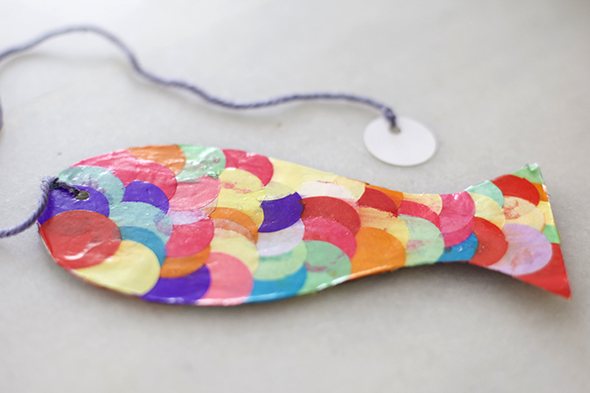
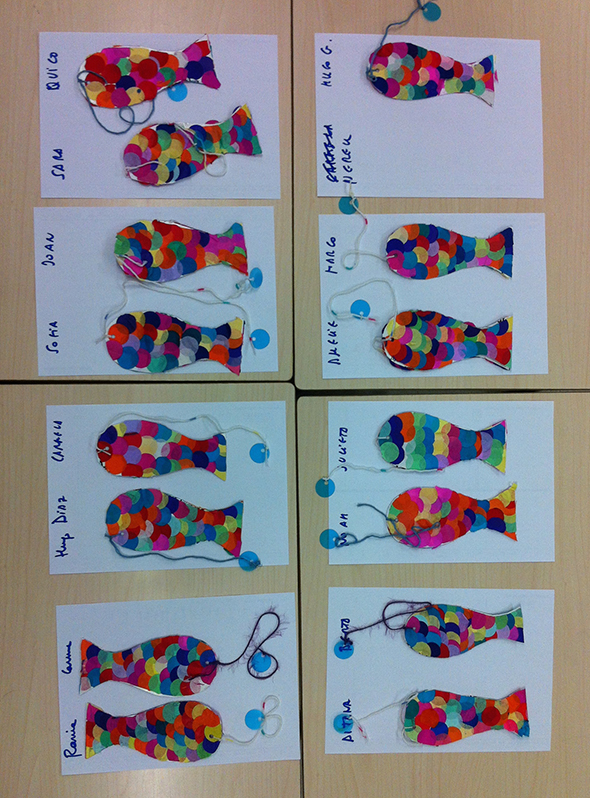

Con la clase de Noah hicimos un trabajo chulísimo para empezar con la biblioteca: unos marcapáginas.
- Recorta un pez en cartulina.
- Pega confeti gigante en filas desde la cola hacia la cabeza, dejando que sobresalga.
- Recorta lo que sobresalga de la silueta.
- Repite por el otro lado.
- Haz un agujero en la cabeza y pasa un hilo.
- Al otro extremo del hilo, ata otro círculo de confeti (la burbuja).
- Si te gusta brillante, como en la foto de abajo, cúbrelo con cola de carpintero.

